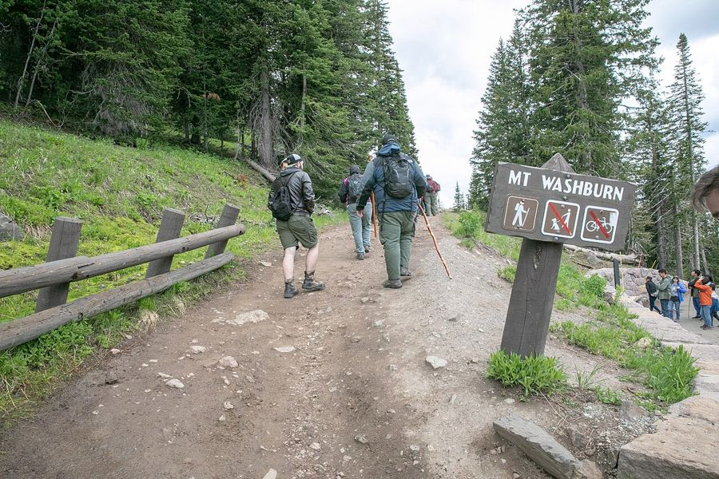
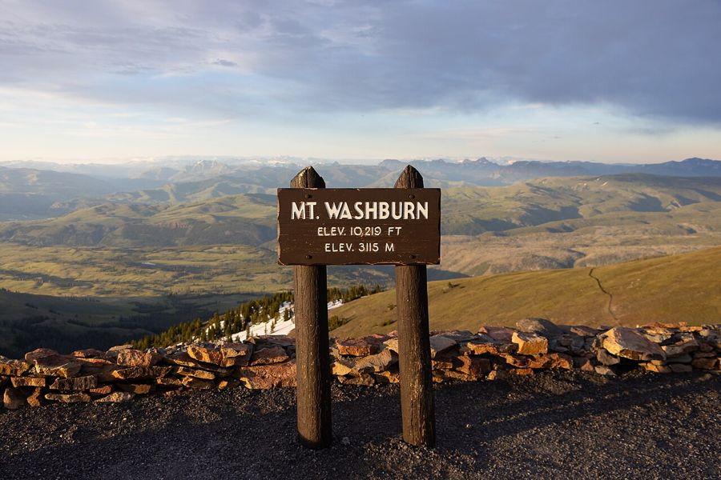

The route starts here. Follow the marked trail toward Summit.
Photo: Diane Renkin · Public domain · Wikimedia Commons

You have reached Summit. The route profile follows the trail from the named trailhead to this endpoint.
Photo: YellowstoneNPS · Public domain · Wikimedia Commons